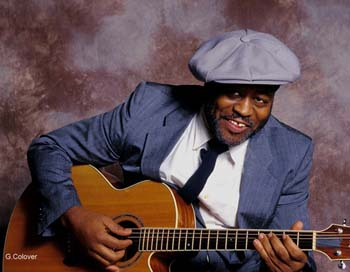

Fruteland Jackson

Победитель Illinois Arts Council Folk/Ethnic Heritage Award 1996.
W. C. Handy-1997 - победил в номинации "За возрождение блюза".
W. C. Handy-2004 - представлен в номинации «Лучший акустический альбом».
Фрутеланд Джексон - это один из последних романтиков акустического блюза. Он использует разные направления: от современного до традиционного блюза, от ритмичных песен рабов с плантаций до эстетизма Дельта блюза и Пьедмонт блюза, от музыки, фактически не предназначенной для акустической гитары, до собственного оригинального материала.
Фрутеланд - певец с уникальным вокалом, композитор и известный теоретик блюза, который выступает в культурных центрах, клубах и на блюзовых фестивалях по всему миру. Диапазон его песен простирается от блюзовых баллад к стандартам фолка и госпелов, и к тому, что он сам называет «Блюз Беби-бума».
Фрутеланд - это один из немногих американцев, посвятивших свою жизнь сохранению, возделыванию и популяризации Акустического Блюза во всем его многообразии. Свою акустическую программу он представил на суд тысяч американцев, давал концерты в Испании, Франции, Великобритании и Италии, и везде получал только восторженные отзывы. Фрутеланд - неизменный любимец публики. Его особый стиль погружает в расслабленное и умиротворенное состояние, где в полной мере насладиться оригинальной манерой исполнения и тонким юмором.
Как апологет блюза, Джексон читает лекции в американских школах, университетах и колледжах. Кроме того, Фрутеланд разработал собственный курс "All About The Blues"T, внедренный в программу ряда американских школ, чтобы донести до каждого студента и школьника то масштабы влияния, которое блюз оказал на современную музыкальную культуру. Сам себя Фрутеланд называет блюзовым активистом и устным историком, ученики же зовут его «Мистер Фрутеланд»,
По всей стране он получил одобрение и ряд наград за свою исследовательскую деятельность истории блюза, за инновации и оригинальный подход к блюзу и классификацию его выдающихся деятелей.
Фрутеланд Джексон родился 9 июня 1953 года в штате Миссисипи, в местечке Sunflower County. В семье, где помимо него, было еще 5 братьев и сестер, существовало негласное предписание постоянно посещать баптистскую церковь, где, помимо проповедей, прихожане слушали музыку и пели вместе со своим пастором. Блюз там был нормой, и это во многом определило дальнейшее музыкальное видение Фрутеланда.
Дедушка и бабушка Джексона по материнской линии являются основателями церкви Нью-Джерико в Догсвилле, и всегда говорили, что внуку следовало быть проповедником и спасать души. Так что работа Фрутеланда с молодежью во многом подтверждает их прогнозы. Дед по отцовской линии был выдающимся баптистским священником, в Миссисипи даже есть улица и парк, названные в его честь. Большое влияние в музыкальном плане на юного Джексона оказал дядя Woodrow "Dick" Chandler - некогда известный в Миссисипи гитарист и пианист, именно он подарил первую гитару Фрутеланду, когда тому исполнилось 12 лет.
Постепенно Фрутеланд развивал музыкальные таланты, слушал фолк, Motown, но настоящее обучение началось в старшей школе, где он играл на трубе и тромбоне в школьной группе и постигал музыкальную теорию. Позже посещал Колумбийский Колледж по классу искусств (музыка и театр) и Университет Рузвельта в Чикаго, где изучал вокал.
Женитьба и рождение ребенка отодвинули музыкальную карьеру на второй план, одно время Фрутеланд работал исследователем в департаменте Иллинойса по правам человека.
Первые позывы вернуться к блюзовой деятельности начались в середине 80-х, когда Фрутеланд вернулся в Миссисипи и открыл свой небольшой бизнес по продаже креветок и устриц. Время от времени он поигрывал блюз и слушал Blues Doctor и Bill Ferris. Спустя 4 года устрично-креветочный бизнес Фрутеланда был сметен с лица земли ураганом Елена. Вместе с ураганом пришел блюз. «В те нелегкие времена блюз был моим единственным утешением». Чтобы окончательно не сесть на мель, пребывая в депрессии, Фрутеланд решил извлечь положительный результат из создавшейся ситуации и всерьез заняться блюзом. Первым делом он начал собирать блюзовые записи, старые пластинки отца, восстанавливать по памяти то, чему учился в юности и постепенно проникаться духом блюза: от ритмов и напевов южных плантаций до B.B. King. Затем долго и тщательно отслушивал весь материал и был потрясен: «И мой отец, и мой дед, и их братья: все они несли в себе блюз, и каждый день приносили его домой». Фрутеланд слушал Robert Johnson, Howling Wolf и своих гуру Johnny Shines, Little Walter, Muddy Waters и дядюшку Woodrow. «Мой дядя Woodrow играл на гитаре с помощью ногтей, а дед собственными глазами видел, как Charley Patton и Bill Hadley играют на гитаре!»
Впервые за 40 лет Фрутеланд понял, кем он должен быть и чем заниматься. Он нашел точку для старта и цель своей жизни. «Блюз - это признание трагедии и достаточный запас оптимизма, чтобы сосуществовать с ней».